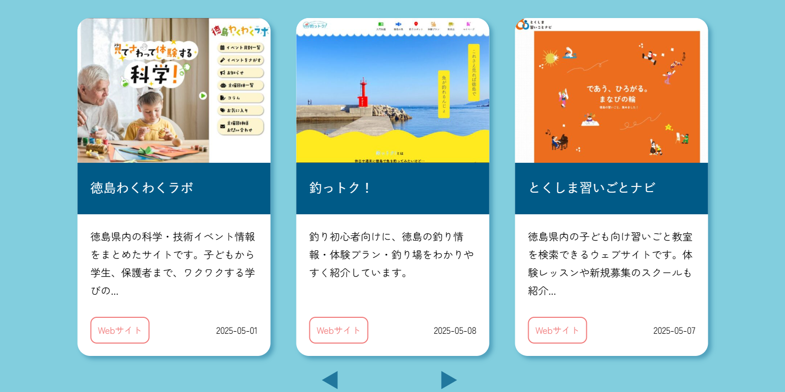

- 制作背景
- QLIP養成学校の企業実習にて、学習支援プラットフォーム『QLIP Connect』をチームで制作しました。私はフロントエンド班に所属し、主にトップページ、新着情報、制作品紹介のデザインカンプ作成と、それらのHTML/CSSコーディングを担当しました。
- 使用言語、アプリ
- Figma／Photoshop／HTML／CSS／Javascript／WordPress
- 制作期間
- デザインカンプ（担当範囲）：約1週間
コーディング（担当範囲）：約2週間 - ターゲット
- 30代、QLIPの職業訓練生、情報収集したい人、スキルや知識を身に着けたい人
- 目的
- 組織全体の情報連携強化、教育プログラムの質的向上、訓練生の就職支援強化
- コンセプト
- QLIPプログラミングスクールの「学びから就職まで」を包括的に支援するデジタルプラットフォーム
- サイト構成
- モバイルファースト設計。サイドバーに使用頻度の高い項目のみを選びだし、他の項目はフッターに表示しています。
- デザイン
- 忙しい中でも直観的に操作できるシンプルなUIを目指しました。
- 配色
-
メインカラーには、クライアントである株式会社QLIP様のブランドカラーである落ち着いた青（#005A87）を使用し、信頼感を醸成。ベースカラーには明るい水色（#82CEDE）を採用し、親しみやすさと華やかさを表現しました。アクセントカラーには、視認性が高くアクションを促す黄色（#FFE400）と赤色（#F17C7C）を限定的に使用し、ユーザーの注意を引きつけたい要素に効果的に配色しました。
#82CEDE
#005A87
#FFE400
#F17C7C
Point
メディアクエリ
レスポンシブ対応において、特にTOPページのカード型レイアウトのメディアクエリ実装で試行錯誤しました。当初はmax-widthの適切な使用方法について理解が浅く、非効率な記述をしてしまいましたが、講師のご指導のもと、各ブレイクポイントで最適な表示を実現する方法を習得しました。この経験を通じて、実践的なレスポンシブデザインのスキルだけでなく、課題に直面した際に積極的に相談し、解決へ導くコミュニケーション能力も向上したと実感しています。
分かりやすいデザインを意識しました
トップページ、新着情報、制作品紹介のデザインカンプを担当しました。ターゲットの訓練生が情報を探しやすく、直感的に操作できるよう、シンプルで一貫性のあるレイアウトを心がけました。単調な印象を避けるため、水色を基調とした装飾やイラストを効果的に配置し、明るく親しみやすい雰囲気のデザインを目指しました。
チームでのコミュニケーションの大切さ
実習中は、不明点を抱え込まず、まず自身で調べ・試行した上で、チームメンバーや講師の方に積極的に質問・相談することを心がけました。例えば、トップページのデザインで悩んだ際、チームで意見を出し合った結果、よりよいレイアウトを制作する事ができました。この経験から、多様な視点を取り入れることの重要性と、円滑なコミュニケーションがプロジェクトの質を高めることを学びました。
サイト設計
下記のボタンから、Figmaでデザインカンプを確認できます。
FigmaへGo！